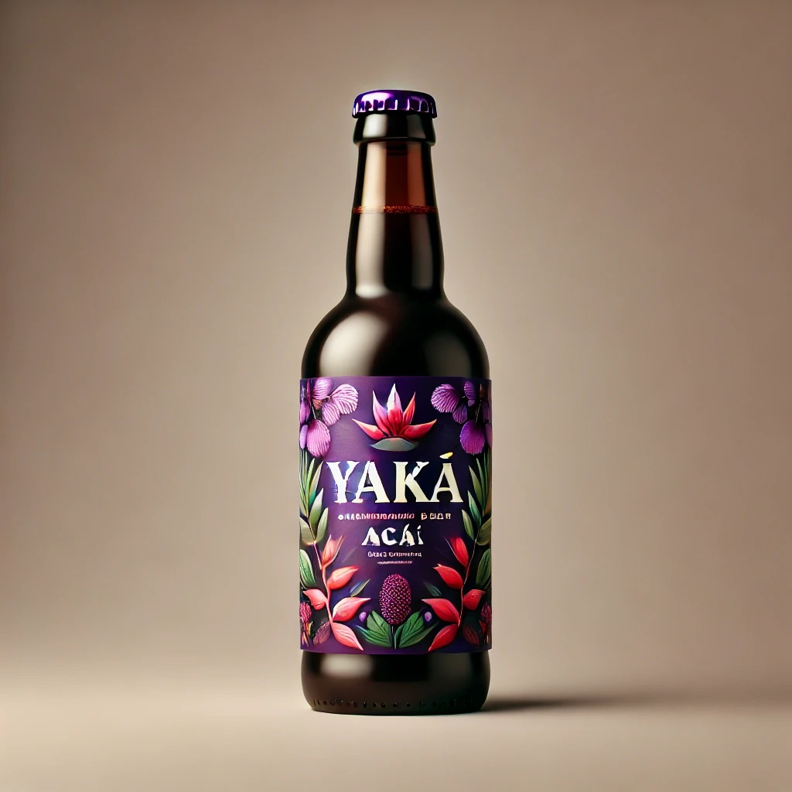
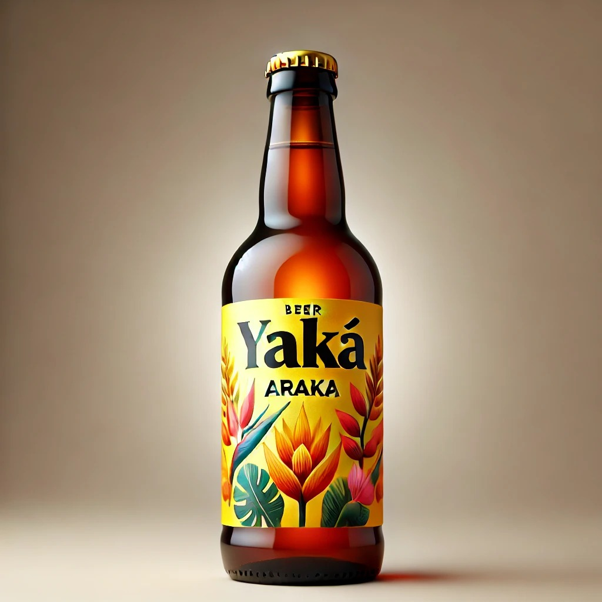
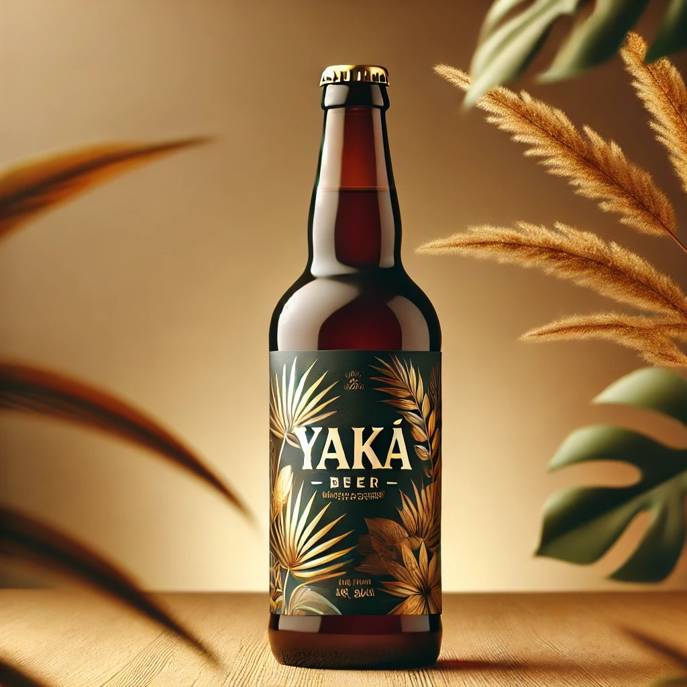

Sumérgete en la selva con Yaká Açaí, una cerveza artesanal que fusiona la frescura del lúpulo con el exótico sabor del açaí, el fruto sagrado de la Amazonía.
Con un equilibrio perfecto entre notas frutales, toques sutilmente ácidos y un cuerpo refrescante, esta cerveza es una invitación a descubrir lo natural y auténtico.Elaborada con ingredientes seleccionados y un compromiso con la sostenibilidad, cada botella de Yaká Açaí honra la biodiversidad y el espíritu de la selva.
🌱Naturalmente única. Sosteniblemente auténtica.

Déjate sorprender por Yaká Aráza, una cerveza artesanal que captura la frescura y el carácter vibrante del aráza, el fruto dorado de la Amazonía. Con un equilibrio perfecto entre dulzura y acidez, sus notas cítricas recuerdan a la guayaba y el maracuyá, ofreciendo una experiencia refrescante y exótica.
Elaborada con ingredientes naturales y un compromiso con la sostenibilidad, cada botella de Yaká Aráza es un tributo a la riqueza de la selva.
🍃 Tropical, refrescante y llena de vida.

Descubre Yaká Dual, una cerveza artesanal única que une dos tesoros de la Amazonía: el intenso y místico açaí con la vibrante frescura del aráza. Esta combinación crea un equilibrio perfecto entre dulzura y acidez, con notas frutales profundas, toques cítricos y un final refrescante que despierta los sentidos.
Elaborada con ingredientes naturales y un compromiso con la sostenibilidad, cada botella de Yaká Dual es una invitación a explorar lo auténtico, lo salvaje y lo inesperado.
🌎 Dos frutos. Un solo espíritu. Una experiencia inolvidable.